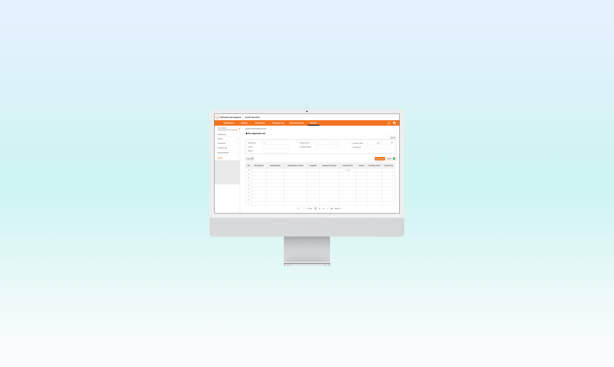

When Hanwha Aerospace consolidated three subsidiaries into one, employee health benefits needed to move into the new integrated ERP. The in-house nurse managing the existing system couldn't explain how it worked. So I logged in and reverse-engineered it myself.

As part of Hanwha Aerospace's three-subsidiary consolidation, employee health benefits needed to be brought into the new integrated ERP. The existing system — a third-party vendor solution used independently before the merger — had been managed entirely by the in-house nurse.
The core challenge: The nurse was the only person who understood how the system worked — and she couldn't articulate it. Verbal explanations during interviews yielded almost nothing usable. There was no documentation, no handover material, and no internal knowledge base to work from.
The initial interview with the in-house nurse was the natural starting point. She was the sole owner of the existing benefit management system and the only person who understood how it operated day-to-day.
The problem: the system was a third-party vendor solution that predated the merger, and she had been using it through habit rather than explicit knowledge. Her verbal explanation of the workflow was fragmented and inconsistent. Standard interview techniques weren't going to get me what I needed.
I asked for her login credentials and accessed the external system myself. Rather than asking someone to explain a process they couldn't articulate, I clicked through every menu, every button, every state — and mapped what I found.
This wasn't exploratory research. It was forensic reconstruction. I documented every data field, every action, every output — then cross-referenced it against the stated requirements to identify gaps and ambiguities. Anything I couldn't resolve from the system itself, I followed up on directly with a phone call.
This approach surfaced the actual data structure the system was built around, which couldn't have been recovered through interviews alone.
Two of the five core features required translating Korean legal frameworks directly into parameter-based eligibility rules.
Health screening eligibility is governed by Korean law: employees are entitled to a free national health checkup every two years, determined by birth year (even years / odd years). This legal rule became the filtering parameter for the screening eligibility feature — not an internal policy, but a statutory requirement that had to be implemented exactly.
Individual benefit customization was tied to employee ID, allowing benefit entitlements to be configured at the individual level across three subsidiaries with different pre-merger benefit structures.
After completing the IA, I ran walkthroughs with developers included — not as a review step, but as a validation loop. When developers identified data that couldn't be integrated from the legacy system, those constraints fed directly back into the design. The workflow went: design → developer review → constraint identification → redesign → repeat.
This meant the final spec was buildable from day one, not aspirationally complete.
The final system unified two previously separate workflows — employees managing their own benefits, and the nurse administering them — into a single ERP module with role-based access.
Mandatory consent flow required before accessing any benefit features — built to satisfy legal data handling requirements for medical information across three merged entities.
Parameter-based eligibility check using birth year as the determining variable, in line with Korean national health checkup law. Automatically surfaces eligible employees without manual tracking.
Employee-ID-based benefit customization allowing the system to reflect each employee's specific entitlements — accommodating the different benefit structures that existed across the three subsidiaries before consolidation.
Admin-triggered email notification system allowing the nurse to send reminders to employees who had not yet applied for benefits they were eligible for — replacing a fully manual tracking process.
Two distinct interfaces built within the same system. The employee view surfaces personal benefit status, eligibility, and application flows. The administrator view (nurse) provides oversight of all employee records, application status, and notification management. Separating these eliminated the confusion of the previous single-interface system and reduced the operational knowledge required to manage benefits.
When the domain expert can't explain the domain, the designer has to become one temporarily. Reverse-engineering the legacy system directly — rather than waiting for someone to explain it — was the only way to recover the information the design depended on. It reinforced that research methods have to adapt to the situation, not the other way around.
I'd document the reverse-engineering process more formally as a deliverable in itself — a system map of the legacy tool — before moving to IA. That artifact would have been useful for developer alignment earlier, and would have made the constraint-identification conversations more precise from the start.